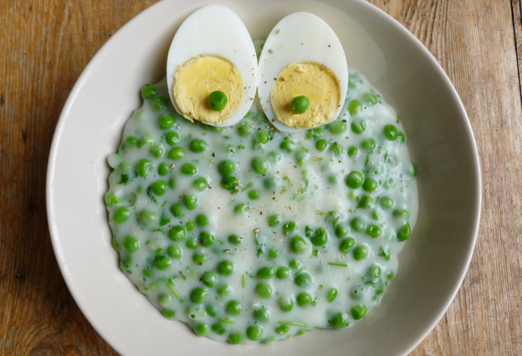

Creating a delicious Pea Fozelek

Description
The főzelék is a traditional Hungarian vegetable-based meal,
which plays a vital role in this cuisine as it complements meat dishes perfectly and has a good effect on metabolism. For many people, főzelék symbolizes childhood,
because it is a common method parents and grandparents use to endear vegetables to kids.
Hungarian főzelék meals are frequently thickened with flour,
either in the form of traditional thickening
(rántás made with fat or habarás made with milk or sour cream)
or simply by sprinkling some flour into the dish.
Ingredients
- 1200 grams of peas
- 3 tablespoons of butter
- 1 onion
- 3 tablespoons of flour
- 2 dl of milk or sour cream
- parsley
- salt, pepper
Instructions
- First peal the peas
- Melt the butter and add the chopped onion
- Let it cook a bit and add the peas
- Let them steam together for a few minutes
- Add the salt, pepper, parsley and water to cover the mixture
- Cook for 20 minutes
- Prepare your thickening in a bowl:
mix the milk/sour cream with the flour and some of the juice of the főzelék.
- Slowly add your thickening to the sauce-pan and cook for 10 more minutes
- Serve with fried eggs or some stew
See more recipes